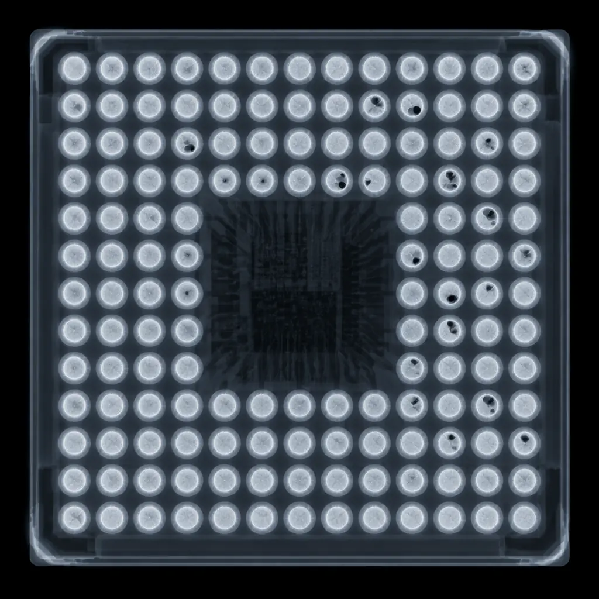
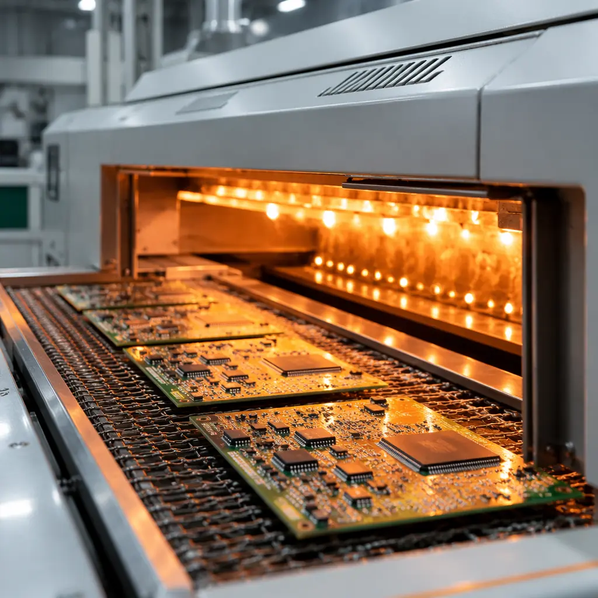

BGA packages have become the dominant IC format for anything above 100 pins — but they introduce assembly challenges that simply don't exist with QFP or SOIC. Every solder joint is hidden under the package body. You cannot visually inspect it. You cannot rework a single joint with an iron. And a single void exceeding 25% of joint volume can create a latent reliability failure that surfaces months after deployment.
Our 8 SMT lines process approximately 250,000 BGA placements per month across package sizes from 0.3mm pitch micro-BGAs to 45mm server-class packages. First-pass yield consistently exceeds 99.2% — a number achieved through tightly controlled reflow profiles, 100% X-ray inspection with automated void analysis, and design rules enforced at the DFM stage before a single stencil is cut.

What Makes BGA Assembly Fundamentally Different
In conventional SMT, every solder joint is visible after reflow — AOI cameras inspect lead wetting, tombstoning, and bridging from above. For BGAs, the entire joint array is hidden. The only non-destructive window is X-ray, and even that requires specific expertise to interpret correctly. This difference cascades into every process decision:
Solder Paste Volume Becomes Your Single Biggest Lever
You cannot add paste after placement. The stencil design — aperture size, thickness, and shape — must deliver exactly the right paste volume for every ball, accounting for PCB pad design and expected collapse height. For 0.5mm pitch BGA, the sweet spot is typically 80–100% of theoretical joint volume. See our full PCB assembly process guide for stencil design principles.
Reflow Temperature Uniformity Determines Yield
A 2°C temperature delta across the BGA footprint during liquidus can cause one corner to reflow while the opposite corner hasn't reached melting point — producing head-in-pillow defects that pass electrical test at room temperature but fail under thermal cycling. Our 10-zone ovens maintain ΔT ≤2°C across the entire assembly through board-specific profile development for every new product.
Placement Accuracy Tightens From ±50μm to ±15μm
QFP placement tolerances of ±50μm are generous compared to BGA requirements: ±25μm for 0.5mm pitch and ±15μm for 0.3mm pitch. Our placement machines hold ±22μm at 3σ — within spec for 0.5mm pitch but pushing the limit for ultra-fine pitch, where self-alignment during reflow becomes the margin of safety. Design-for-manufacturability rules for pad geometry can increase this margin significantly.
Factory Reality: First-pass BGA yield above 99% is achievable — but not at generic reflow profiles. Every product gets its own profile developed from a sacrificial assembly with thermocouples at the center and corner balls of every BGA type on the board. We lock that profile to the product and recall it automatically on subsequent runs. No generic profiles, no "close enough."
Reflow Profiling — The Single Biggest Lever on BGA Yield
If one process parameter separates high-yield BGA lines from average ones, it's the reflow profile. A generic lead-free profile might produce acceptable results on chip resistors while generating 2–3% BGA defect rates that go undetected until functional test.

Preheat — 25°C → 150°C at 1.5–2.5°C/sec
Too slow and flux activates prematurely, consuming its cleaning capacity before solder reaches liquidus. Too fast and thermal shock delaminates moisture-sensitive packages. Our standard ramp is 2.0°C/sec, measured at the largest BGA center via thermocouple in a sacrificial assembly.
Soak — 150°C → 180°C for 60–90 Seconds
Equalizes temperature across the board. Without adequate soak, the BGA's thermal mass creates a gradient where the center runs 8–15°C cooler than edges. Our ovens hold ΔT ≤2°C during soak through 10-zone convection control.
Reflow — Above 217°C for 60–75 Seconds (SAC305)
Time above liquidus is the tightest parameter. Below 50 seconds = weak intermetallic formation. Above 90 seconds = brittle IMC growth at the ball-pad interface. Peak targets 240–245°C — hot enough for wetting on large thermal-mass BGAs, below the 250°C MSL damage threshold. PCB material selection directly impacts the thermal profile — High-Tg FR-4 and Rogers laminates behave differently in reflow.
Cooling — 245°C → 100°C at 2–4°C/sec
Too fast (>6°C/sec) freezes residual stress that accelerates thermal fatigue. Too slow (<1°C/sec) allows large, brittle intermetallic grains to form. Target: 3°C/sec for optimal fine-grain solder structure.
X-Ray Inspection — Your Only Window Under the Package
AOI sees the package edge and surrounding components — it cannot see the 400+ joints underneath. X-ray is the only non-destructive method that reveals what's happening beneath the package body. But not all X-ray is equal:
| Inspection Mode | 2D Transmission X-Ray | 3D CT X-Ray |
|---|---|---|
| What it sees | Top-down density map — voids visible, joint shape visible | Full 3D volume — catches head-in-pillow, interface voids |
| Speed | Fast — inline, every board | Slower — sampling or 100% for Class 3 |
| Void detection | Total void % per joint | Void % + interface proximity (voids touching pad surface) |
| Head-in-Pillow | Misses it — joint looks structurally normal from above | Catches it — interface gap visible in cross-section slices |
| Huaxing standard | 100% of boards, IPC Class 3 threshold (15% max void) | 100% for Class 3 products, 5% sampling for commercial |
For any design going to IPC Class 3 acceptance or high-reliability applications, CT X-ray is not optional — it's the difference between shipping a board that passes test and shipping a board that survives 1,000 thermal cycles. Our comprehensive PCB testing methods guide covers the full inspection toolkit beyond X-ray.
Void Location Matters More Than Total Size: A 15% void at the center of a joint is mechanically benign. A 10% void touching the ball-pad interface reduces the effective load-bearing area at the intermetallic layer — the weakest point of any solder joint. Our analysis software measures both total void percentage and interface proximity, flagging any joint where voids contact the pad surface regardless of total area. For corner balls under large BGAs, the limit tightens to 5% at the interface.
Five BGA Defects That Kill Production Yield
After analyzing defect data across tens of thousands of assemblies, these five categories account for over 90% of all BGA-related failures:
Voiding — Interface Proximity Matters More Than Total %
IPC-A-610 Class 3 allows 15% void area per joint. Our internal standard is 10% after reliability testing showed a 3× increase in thermal cycling failure rate for 0.5mm pitch and below between the 10–15% voiding range. Critical BGA positions (corner balls, highest thermomechanical stress) apply a 5% interface-level limit.
Head-in-Pillow (HiP) — Passes Test, Fails in the Field
Solder paste and BGA ball both reach liquidus but fail to fully coalesce — leaving a microscopic gap that maintains electrical contact at room temperature. The board passes ICT and functional test, ships, and fails 6–12 months later. Root cause is almost always a thermal gradient during the critical 10–15 seconds after liquidus. Our nitrogen atmosphere reflow (O₂ <100ppm) eliminates the oxidation that exacerbates HiP, and CT X-ray sampling on every batch catches it before the factory gate.
Bridging — Excess Solder Shorts Adjacent Balls
For 0.5mm pitch with 0.3mm balls, adjacent centers are only 0.5mm apart. Excess paste volume — from over-etched stencil apertures or insufficient area ratio — causes bridging during reflow. We determine optimal stencil design for each BGA footprint using solder joint simulation software before cutting the stencil, not by trial and error on the line. For mixed-pitch BGAs, stepped stencils handle the volume requirements of different pitches simultaneously.
Popcorning — Moisture Destroys the Package During Reflow
Absorbed moisture turns to steam at 220°C+, generating internal pressures that delaminate the die attach or crack the mold compound. MSL 3 parts must be assembled within 168 hours of bag opening or baked at 125°C for 24 hours. Our component storage system tracks MSL exposure time per reel — parts exceeding floor life are automatically flagged and quarantined until baked.
Pad Cratering — A Design Problem Disguised as Assembly Defect
When a joint lifts the copper pad off the laminate, it's almost always a material and design issue — resin-rich areas under BGA pads in High-Tg FR-4 lacking the strength to withstand CTE mismatch between silicon die (~3 ppm/°C) and laminate (~14–16 ppm/°C). For packages above 35mm, underfill distributes stress across the entire interface. For HDI designs with microvias, stacked via structures must be fully filled and planarized before BGA pad definition.
How Huaxing PCBA Ensures BGA Assembly Quality
The difference between a 95% yield line and a 99.2% line isn't technology — it's process discipline. Here's our BGA quality framework:
Incoming Inspection + MSL Tracking (30 min)
Every BGA reel verified against BOM — package code, ball count, pitch, MSL rating. Floor-life tracking begins immediately upon bag opening. Parts approaching expiry trigger automatic bake — no manual override.
Stencil Design Review (per product)
Solder joint simulation software determines optimal aperture geometry for each BGA on the board. For mixed-pitch designs, stepped stencils handle different volume requirements without compromising fine-pitch areas.
Product-Specific Reflow Profile
Sacrificial assembly with thermocouples at every BGA position. Profile adjusted until all joints reach 235–245°C peak with ΔT ≤2°C. Profile locked to product, recalled automatically on re-runs.
100% 2D X-Ray + CT Sampling
Inline X-ray on every board with automated void analysis flagging joints above threshold. CT X-ray at 100% for Class 3, 5% sampling for commercial with tightened limits — any HiP detection triggers 100% batch inspection.
Q2 2026 Process Data: Across all BGA assemblies — 0.3mm to 1.27mm pitch, 9-ball to 1,936-ball packages — first-pass yield: 99.2%. Field defect escape rate: <0.03% over a 12-month rolling window. Fine-pitch BGA (≤0.5mm): 98.7%, targeting 99.0% by Q4 2026 through placement accuracy investment and nitrogen reflow optimization.
BGA assembly capability isn't about having the right equipment — it's about having the right process controls and enforcing them on every board. If you're preparing a BGA design for production, send us your files for a free DFM review. We'll tell you exactly what needs attention before tooling — backed by process data, not opinions. Understanding PCB cost drivers can also help you optimize your BGA design for both reliability and budget.